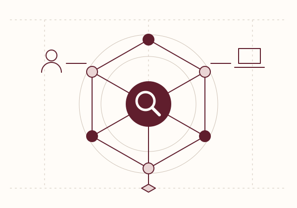

Security, with the detail left in.
Understand
the risk.
Know what’s next.
Good security starts with a clear view of the business. We find the gaps, explain the choices and work with your people to make the next step achievable.
Independent advice · Practical reports · Dorking & remote
The Guardmere approach
01 / FIELD REPORT
12
areas of focus
3
named specialists
1
clear action plan
A useful report is more than a score. It tells you what matters, who needs to be involved and what can wait.
I. Start with your business, not a tool.
II. Put evidence behind the priorities.
III. Leave people able to act.
01 / Where we help
A considered place to start.
02 / A useful process
Less theatre.
More understanding.
We work alongside your team. You keep the context; we bring an independent view and the time to follow the evidence.
Meet the practiceMake the scope make sense.
We ask how work gets done, what you need to protect and what would interrupt the business. Together we agree the systems, people and evidence in scope.
A written scope, an evidence list and a named point of contact.
Follow the evidence.
Interviews, configuration reviews and carefully agreed checks build a picture of the controls that matter. We discuss important findings as we go.
Testing starts only with written authorisation and an agreed scope.
Turn findings into decisions.
Every recommendation has a reason, an owner role and an order of work. We separate urgent exposure from steady improvement, with space for questions.
A decision-ready report, a practical roadmap and a follow-up conversation.
03 / A small step today
Know what evidence you have.
Gather the useful basics before a conversation, without pretending that a tick is a security assessment.
Open your checklist04 / A conversation first
Bring the difficult question.
Not sure whether you need a review, a plan or a second opinion? Twenty minutes can make the starting point clearer.
Next consultation day:
Talk to a consultant